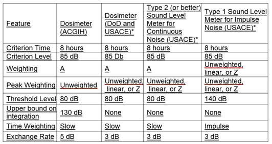
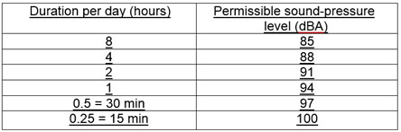

05.C Hearing Protection and Noise Control
05.C.04–05.C.05
05.C.04 Noise controls. Practical engineering or administrative controls shall be considered and implemented when personnel exposed to continuous (steady-state) sound-pressure levels exceeding the limits specified stated above.
- Engineering controls are the primary means of controlling exposures to excessive noise in the workplace. These controls may include lubrication, isolation, damping, baffles, or other methods.
- Administrative controls.
- Noise-hazardous areas include all areas where the noise values exceed the standards above and shall be posted to indicate the presence of hazardous noise levels and the requirement for hearing protection. Equipment identified as noise hazardous shall be labeled as a noise hazard requiring the use of hearing protection. If noise hazards impact personnel working in adjacent areas, the individuals in the adjacent areas shall be notified of the noise values and offered hearing protection.
- If noise exposure to employees cannot be reduced to below the required standard, operating time limits may be imposed.
TABLE 5-3
Settings for Noise Measuring Equipment

NOTE: * When used for the purposes of delineating noise hazardous areas or evaluating noise exposures to personnel.
TABLE 5-4
Non-DoD Continuous Noise Exposures
(OSHA Standard)

- Personal Protective Equipment (PPE).
- Hearing protection devices shall provide for the attenuation of noise to acceptable levels (i.e., 85 dBA for continuous (steady-state) noise). If necessary to hear audible warnings, hearing protection devices should not attenuate hearing levels below an individual's hearing threshold.
- Dual hearing protection (earplugs and a second method such as ear muffs worn concurrently), shall be based on the attenuation of the specific hearing protection. Generally, double hearing protection should be used whenever employees are exposed to continuous noise greater than 115 dBA.
- The attenuation of the specific hearing protection, except custom ear mold hearing protection, shall be determined using the NIOSH de-rating scheme.
- Ear insert devices, to include disposable, pre-formed, or custom-molded earplugs, shall be fitted to the exposed individual by an individual trained in such fitting and able to recognize the difference between a good and poor fit. Plain cotton is not an acceptable hearing protection device.
05.C.05 Hearing Conservation Program (HCP) Requirements.
- A HCP shall include all personnel who are exposed to hazardous noise or ototoxic chemicals (including arsenic, carbon disulfide, carbon monoxide, cyanide, lead and derivatives, manganese, mercury and derivatives, n-hexane, Stoddard solvent, styrene, trichloroethylene, toluene, and xylenes). The usage of these chemicals shall be considered in development of the HCP.
- All contractors who expose employees to noise greater than the values listed above shall have a written HCP as part of their APP which includes:
- The identification, documentation, engineering controls, PPE and hearing testing for all employees;
- Employee training on the hazards of noise and the methods of protection provided;
- Labeling of all noise hazardous equipment and areas as required above, and
- Pre-employment and end-of-employment hearing testing of individuals who will be working in noise hazardous environments greater than 30 days a year for the contractor.
{kind=link}
{kind=link}